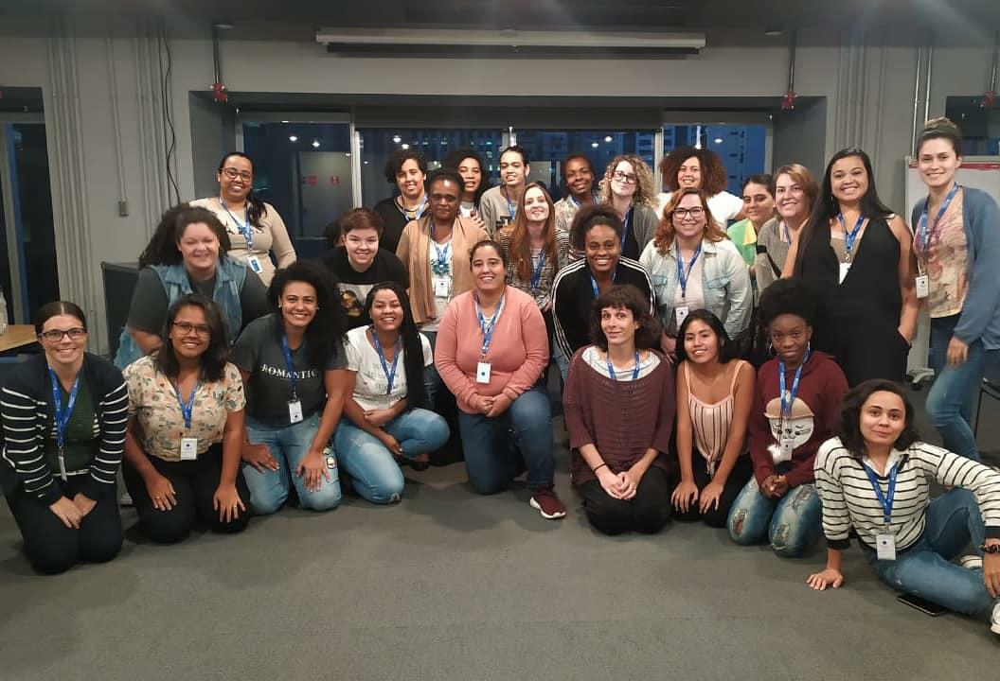
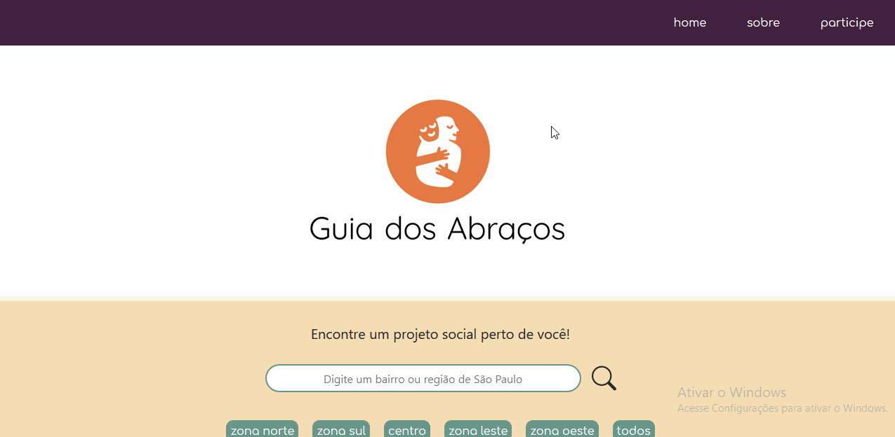

Desenvolvedora
Aluna do bootcamp de front-end da @reprograma | 2020


Java Script
CSS
HTML 5
GIT
Bootstrap
React
Node JS
Figma
J Query
Atualmente, estou em transição de carreira para a área de tecnologia com enfoque em programação front-end. Sou graduada em Comunicação Social pela Universidade Federal do Rio de Janeiro e pós-graduada em Gestão de Negócios (MBA) pelo IBMEC-RJ.
Me considero uma profissional transdisciplinar e curiosa. Acredito no poder na tecnologia e da educação como forma de melhorar a vida das pessoas e trazer soluções para questões globais. Meu percurso profissional, que passa também pela área das artes, me fez enxergar que eu poderia aliar criatividade à tecnologia para gerar impacto social positivo.
Dessa maneira, resolvi empreender novos desafios e me aventurar no mundo da programação. No início de 2020, fui selecionada para o bootcamp de front-end da {reprograma} e fui introduzida na área de tecnologia.
Criação da página web para a produtora cultural Oyá, durante o bootcamp da {reprograma}. O projeto foi feito por 5 desenvolvedoras, utilizando as seguintes ferramentas: JavaScript, CSS, HTML, Bootstrap.

Projeto desenvolvido como TCC para o bootcamp da {reprograma}. O Guia dos Abraços é um guia online que reúne projetos sociais para ajudar pessoas em situação de rua ou vulnerabilidade, sendo classificado por bairros e regiões de São Paulo - SP. O projeto foi desenvolvido em React, CSS, Bootstrap e Javascript.
Escolhemos homenagear mulheres inspiradoras. No meu projeto falei de Frida Kahlo, artista e pintora mexicana. Projeto realizado com HTML e CSS.
Aplicação feita com React JS, JavaScript e CSS. Nela, foi realizado o consumo de uma API do Github, que através do nome de usuário da plataforma, consulta seus respectivos repositórios. Para o consumo da API, foi utilizada a biblioteca Axios.